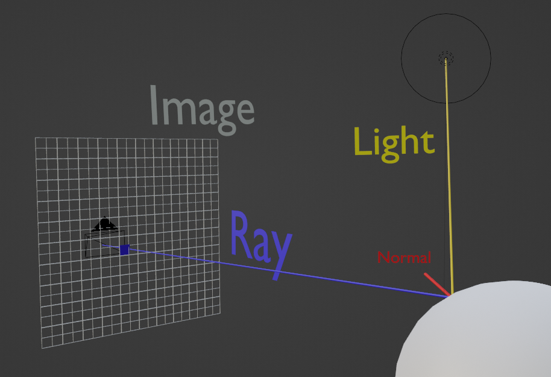

Computer Graphics
Did you know APL was used to make graphics for the original TRON movie? Judson Rosebush, one of the founders of the computer animation studio Digital Effects, developed "Visions"; a library of APL functions intended for generating computer graphics. It allowed the manipulation of polygons in three-dimensional space and compute perspective transformations. The company created several animated sequences for the movie, including animating the polyhedral character "Bit" who could only convey one bit of information, answering yes or no questions.

Here's a quote from Jeffrey Kleinster, one of the co-founders of Digital Effects, in an interview published in “CG 101”: "Our original setup was a 1200-baud modem connection to an Amdahl V6 running A Programming language (APL) in Bethesda, Maryland, using a Tektronix display to preview wireframes. (Polygons refreshed at one per second—that's one polygon per second!)…"
In this section, we will write our own ray marcher to render out 3D environments entirely in APL. The advantages of an array-based language for computer graphics will be immediately seen.
In very simple terms, light rays travel from light sources, potentially reflecting off of surfaces, some of which eventually reach light detectors. For example, when admiring a nice forest view, rays of light from the sun get absorbed and emitted at different frequencies by leaves, some of which then make their way to your retina.
The only rays of light that affect the final image are the ones which finally reach detectors. For the purposes of computation, light rays are usually traced from from detectors to the sources. This is entirely equivalent to tracing light from sources to detectors, as long as the assumptions of geometric optics hold, which are almost universally assumed in computer graphics.
The procedure we will use is as follows. We place a camera at a certain position relative to a 3D environment, and send out rays from the camera for every pixel in the final rendered image in the direction of that pixel. We then calculate the intersection of each of our rays with the environment, and get the directions from the points to the light source of our scene. We finally calculate the shading for the specific points of the environment, by comparing the vector orthogonal to the surface at that point, the normal vector, to the direction of the light source. We will ignore lighting falloff and shadows in our rendering for simplicity.

For the first step, we create a vector called camera which stores the camera position. We refer to the first coordinate as the x coordinate, the second as the y coordinate, and the third as the z coordinate. We imagine the camera is facing the positive z direction, towards (0 0 1).
camera ← 0 0 ¯10
We then create an array to hold pixel coordinates, in this case a 300×300 image.
⍳10 10
┌────┬────┬────┬────┬────┬────┬────┬────┬────┬─────┐
│1 1 │1 2 │1 3 │1 4 │1 5 │1 6 │1 7 │1 8 │1 9 │1 10 │
├────┼────┼────┼────┼────┼────┼────┼────┼────┼─────┤
│2 1 │2 2 │2 3 │2 4 │2 5 │2 6 │2 7 │2 8 │2 9 │2 10 │
├────┼────┼────┼────┼────┼────┼────┼────┼────┼─────┤
│3 1 │3 2 │3 3 │3 4 │3 5 │3 6 │3 7 │3 8 │3 9 │3 10 │
├────┼────┼────┼────┼────┼────┼────┼────┼────┼─────┤
│4 1 │4 2 │4 3 │4 4 │4 5 │4 6 │4 7 │4 8 │4 9 │4 10 │
├────┼────┼────┼────┼────┼────┼────┼────┼────┼─────┤
│5 1 │5 2 │5 3 │5 4 │5 5 │5 6 │5 7 │5 8 │5 9 │5 10 │
├────┼────┼────┼────┼────┼────┼────┼────┼────┼─────┤
│6 1 │6 2 │6 3 │6 4 │6 5 │6 6 │6 7 │6 8 │6 9 │6 10 │
├────┼────┼────┼────┼────┼────┼────┼────┼────┼─────┤
│7 1 │7 2 │7 3 │7 4 │7 5 │7 6 │7 7 │7 8 │7 9 │7 10 │
├────┼────┼────┼────┼────┼────┼────┼────┼────┼─────┤
│8 1 │8 2 │8 3 │8 4 │8 5 │8 6 │8 7 │8 8 │8 9 │8 10 │
├────┼────┼────┼────┼────┼────┼────┼────┼────┼─────┤
│9 1 │9 2 │9 3 │9 4 │9 5 │9 6 │9 7 │9 8 │9 9 │9 10 │
├────┼────┼────┼────┼────┼────┼────┼────┼────┼─────┤
│10 1│10 2│10 3│10 4│10 5│10 6│10 7│10 8│10 9│10 10│
└────┴────┴────┴────┴────┴────┴────┴────┴────┴─────┘
pxl_coords ← ⍳300 300
If we picture the image as being in front of the camera, with the camera facing the center of the image, we divide the values by the width/height, and shift them so that the vector 0 0 is at the center.
(⍳5 5)÷5
┌───────┬───────┬───────┬───────┬─────┐
│0.2 0.2│0.2 0.4│0.2 0.6│0.2 0.8│0.2 1│
├───────┼───────┼───────┼───────┼─────┤
│0.4 0.2│0.4 0.4│0.4 0.6│0.4 0.8│0.4 1│
├───────┼───────┼───────┼───────┼─────┤
│0.6 0.2│0.6 0.4│0.6 0.6│0.6 0.8│0.6 1│
├───────┼───────┼───────┼───────┼─────┤
│0.8 0.2│0.8 0.4│0.8 0.6│0.8 0.8│0.8 1│
├───────┼───────┼───────┼───────┼─────┤
│1 0.2 │1 0.4 │1 0.6 │1 0.8 │1 1 │
└───────┴───────┴───────┴───────┴─────┘
((⍳5 5)÷5)-⊂0.6 0.6
┌─────────┬─────────┬──────┬────────┬────────┐
│¯0.4 ¯0.4│¯0.4 ¯0.2│¯0.4 0│¯0.4 0.2│¯0.4 0.4│
├─────────┼─────────┼──────┼────────┼────────┤
│¯0.2 ¯0.4│¯0.2 ¯0.2│¯0.2 0│¯0.2 0.2│¯0.2 0.4│
├─────────┼─────────┼──────┼────────┼────────┤
│0 ¯0.4 │0 ¯0.2 │0 0 │0 0.2 │0 0.4 │
├─────────┼─────────┼──────┼────────┼────────┤
│0.2 ¯0.4 │0.2 ¯0.2 │0.2 0 │0.2 0.2 │0.2 0.4 │
├─────────┼─────────┼──────┼────────┼────────┤
│0.4 ¯0.4 │0.4 ¯0.2 │0.4 0 │0.4 0.2 │0.4 0.4 │
└─────────┴─────────┴──────┴────────┴────────
pxl_directions ← (pxl_coords÷≢pxl_coords)-⊂0.6 0.6
If we picture the image as being in front of the camera, with the camera facing the center of the image, we divide the values by the width/height, and shift them so that the vector 0 0 is at the center.
,∘1¨(((⍳5 5)÷5)-⊂0.6 0.6)
┌───────────┬───────────┬────────┬──────────┬──────────┐
│¯0.4 ¯0.4 1│¯0.4 ¯0.2 1│¯0.4 0 1│¯0.4 0.2 1│¯0.4 0.4 1│
├───────────┼───────────┼────────┼──────────┼──────────┤
│¯0.2 ¯0.4 1│¯0.2 ¯0.2 1│¯0.2 0 1│¯0.2 0.2 1│¯0.2 0.4 1│
├───────────┼───────────┼────────┼──────────┼──────────┤
│0 ¯0.4 1 │0 ¯0.2 1 │0 0 1 │0 0.2 1 │0 0.4 1 │
├───────────┼───────────┼────────┼──────────┼──────────┤
│0.2 ¯0.4 1 │0.2 ¯0.2 1 │0.2 0 1 │0.2 0.2 1 │0.2 0.4 1 │
├───────────┼───────────┼────────┼──────────┼──────────┤
│0.4 ¯0.4 1 │0.4 ¯0.2 1 │0.4 0 1 │0.4 0.2 1 │0.4 0.4 1 │
└───────────┴───────────┴────────┴──────────┴──────────┘
pxl_directions ← ,∘1¨pxl_directions
Where here, the each ¨ operator is used to apply the function (,∘1) to each element of the array. Remember, (,∘1) is binding the value 1 to the function (,), which means (,∘1)x is the same as (x,1).
Next, we have to calculate the intersection of our rays with the environment. One way is to do this is to keep moving along our rays in small steps until we are close enough to an object in the environment, which we detect using a function that returns the distance to the nearest object. This function should also return negative values for being inside the object, this function is usually called a signed distance function.
A more efficient solution is to use this distance function to move along our rays by the distance to the nearest object, guaranteeing first that we do not accidentally move beyond the nearest object while moving along our rays, and second that we approach these objects as quickly as possible. This approach is called “sphere tracing”.

{kind=link}
We first setup the environment. The function for getting the distance between two points ⍺ and ⍵ in 3D space can be obtained using the Pythagorean theorem:

dist ← {0.5*⍨+/(⍺-⍵)*2}
1 2 3 dist 4 6 3
5
The signed distance function for a sphere is immediate from the definition of a sphere as the set of points a distance R away from some center point C.

sphere ← {⍵[3] -⍨ ⍵[1] dist ⍵[2]}
R ← 2
C ← 0 0 0
P ← 0 0 4
sphere P C R
2
P ← 0 3 4
sphere P C R
3
Defining our environment as a sphere at the origin, we define the distance function for the environment.
env ← {C ← 0 0 0 ⋄ R ← 2 ⋄ sphere ⍵ C R}
P ← 0 3 4
env P
3
Let’s define the other functions we need and leave the marching function for last.
When a point on an object is hit by a ray, the color of that point needs to be calculated in order to make it into the final image. The main insight is that, at every point on the surface of an object, the lighting at that point depends on the angle between the light ray and the surface. For example, if the light ray hits the surface directly, so that it is parallel to the normal at that point, that point will be at the maximum brightness compared to points where the light ray does not hit exactly. If the light ray is perpendicular or makes a negative angle with the surface, then that part of the object is obscured.

We first normalise the vectors then take their dot product, this gives us the cosine of the angle between the two. Mathematically,

We will use the cosine of the angle for shading, instead of using the angle explicitly.
length ← 0∘dist
normalize ← ⊢÷length
normalize 3 4 0
0.6 0.8 0
The last function we will need is one which returns the normal to the environment at some point. Consider a point on the sphere. Intuitively, the vector orthogonal to the sphere will be the direction which makes the distance to the sphere increase the fastest, since every other direction either takes us towards the center of the sphere or away from the sphere at a slower rate

We can construct this vector by calculating how much the distance function changes with a small variation in the x, y, and z directions, and normalizing the resulting vector. Small variations are needed so that we only consider points close to the surface point. In vector analysis terms, we are calculating the gradient of the distance function at that point.
small ← 0.0001 0 0
P ← 2 0 0
Δenv_x ← (env (P+small)) - env (P-small)
Δenv_x
0.0002
We can use the rotate ⌽ operator to make the small vector in the y and z direction too.
1 ⌽ small
0 0 0.0001
(⌽∘(0.0001 0 0))¨3 2 1
┌──────────┬──────────┬──────────┐
│0.0001 0 0│0 0.0001 0│0 0 0.0001│
└──────────┴──────────┴──────────┘
⌽⍳3
3 2 1
(⌽∘small)¨⌽⍳3
┌──────────┬──────────┬──────────┐
│0.0001 0 0│0 0.0001 0│0 0 0.0001│
└──────────┴──────────┴──────────┘
P ((env+)-(env-))⍨ small
0.0002
P ((env+)-(env-))⍨((⌽∘(0.0001 0 0))¨⌽⍳3)
┌──────────┐
│0.0002 0 0│
└──────────┘
⊃ P ((env+)-(env-))⍨((⌽∘(0.0001 0 0))¨⌽⍳3)
0.0002 0 0
norm ← {normalize ⊃ ⍵ ((env+)-(env-))⍨((⌽∘(0.0001 0 0))¨⌽⍳3)}
norm P
1 0 0
Finally, we are now ready to write the ray marching function. The marching function should take the camera’s initial position, and move it along a ray according to the distance function for either a maximum number of marches or a point is hit, and for the latter return the dot product of the normal at that point with the vector from that point to the light source.
march←({cur_pos←⊃⍵
⋄ ray←2⊃⍵
⋄ i←3⊃⍵
⋄ cur_pos ← cur_pos + (env cur_pos)×ray
⋄ (env cur_pos)<0.0001:0⌈(norm cur_pos)(+.×)(normalize cur_pos-light)
⋄ cur_pos ray (i+1)}⍣{(1=≢⍺)∨((⍺,0 0)[3]>32)})
camera ← 0 0 ¯10
ray ← 0 0 1
light ← 2 3 4
march camera ray 0
0.8571428571
march camera (0 1 0) 0
┌────────────────────┬─────┬──┐
│0 3.969795284E10 ¯10│0 1 0│33│
└────────────────────┴─────┴──┘
Let’s go through the above code step by step.
The function takes in a three element nested array, the first being the camera position, the second is the ray to march along, and the third is a counter variable. It starts from the camera position and adds to it the distance to the environment times the ray. If the distance to the environment is less than a small value, then it returns the dot product of the vector to the light source with the normal to the environment at that point, or zero, depending on which is greater. If not, then it returns the current position, ray, and counter incremented by one.
The power operator f⍣g allows us to evaluate the function f until the function g returns a value of 1. The function g takes in the previous return value of f, and the current return value of f, as left and right arguments.
Here, the march function keeps moving the current position along the ray until either the result is a single value, that is, if the if statement in the march function returns either 0 or the dot product, by checking the number of elements (1=≢⍺), or if the number of iterations exceeds 32, ⍺[3]>32.
Wrapping the march function in a function that returns zero if the result is not a single number, we apply the function to the pixel coordinates and store the result.
color ← {i ← march camera ⍵ 0 ⋄ 1=≢i:i ⋄ 0}
color (0 1 0)
0
color¨(,∘1¨((⍳5 5)÷5)-⊂0.6 0.6)
0 0 0 0 0
0 0 0.7893982995 0 0
0 0.8900597217 0.8571428571 0.145402276 0
0 0 0.3004347993 0 0
0 0 0 0 0
image ← color¨pxl_directions
This calculation might take a couple seconds.
To actually see our rendered image, we need to export our array as an image file. We will be using the very simple PPM file format, in which images are plain text files. The header of a PPM file consists of a format indicator “P3”, the size of the image (5 5), the maximum value for each color (255), and the colors in RGB format. Using the ⎕NPUT function with the append (2) argument, we write to a file called “image.ppm”. We use the encode ⍕ operator to convert between numerical arrays to character arrays.
'P3'⎕NPUT'image.ppm'2
(⍕⍴image)⎕NPUT'image.ppm'2
'255'⎕NPUT'image.ppm'2
test ← color¨(,∘1¨((⍳5 5)÷5)-⊂0.6 0.6)
test
0 0 0 0 0
0 0 0.7893982995 0 0
0 0.8900597217 0.8571428571 0.145402276 0
0 0 0.3004347993 0 0
0 0 0 0 0
test ← ⌈¨255×(test)
test
0 0 0 0 0
0 0 202 0 0
0 227 219 38 0
0 0 77 0 0
0 0 0 0 0
,∘(0 0)¨test
┌─────┬───────┬───────┬──────┬─────┐
│0 0 0│0 0 0 │0 0 0 │0 0 0 │0 0 0│
├─────┼───────┼───────┼──────┼─────┤
│0 0 0│0 0 0 │202 0 0│0 0 0 │0 0 0│
├─────┼───────┼───────┼──────┼─────┤
│0 0 0│227 0 0│219 0 0│38 0 0│0 0 0│
├─────┼───────┼───────┼──────┼─────┤
│0 0 0│0 0 0 │77 0 0 │0 0 0 │0 0 0│
├─────┼───────┼───────┼──────┼─────┤
│0 0 0│0 0 0 │0 0 0 │0 0 0 │0 0 0│
└─────┴───────┴───────┴──────┴─────┘
,/test
┌─────────┬───────────┬──────────────┬──────────┬─────────┐
│0 0 0 0 0│0 0 202 0 0│0 227 219 38 0│0 0 77 0 0│0 0 0 0 0│
└─────────┴───────────┴──────────────┴──────────┴─────────┘
image ← ,∘(0 0)¨(⌈¨255×image)
(('image.ppm' 2)∘(⎕NPUT⍨)⍕)¨,/image
Opening the file in a compatible program, such as the GIMP image editor, we see the beautifully shaded sphere.
By changing the distance function of the world, it is possible to render more complex objects. Take for example, the distance function for a torus.
torus ← {r ← ⍺ ⋄ p ← ⍵
⋄ q ← (r[1]-⍨length p[1],p[3]),p[2]
⋄ r[2]-⍨length q
}
env ← {1 0.5 torus ⍵}
There are also ways of combining distance functions to create more complex scenes, such as taking the minimum of two distance functions. However, we will leave the creation of more complex 3D scenes to the interested reader.